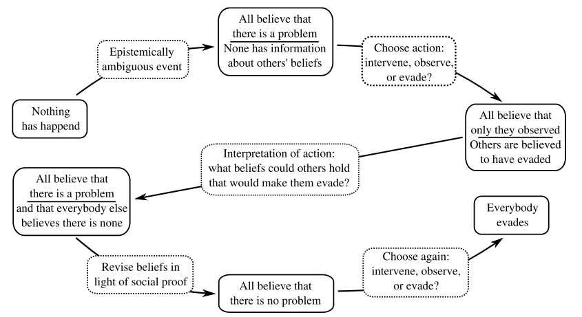

What is the Bystander Effect?
The Bystander Effect is a situation in which a majority individuals privately disagree with a given norm, but go along with it because they incorrectly believe that the majority agrees. In this project we used Dynamic Epistemic Logic (explained here) to implement a Multi Agent System (can be downloaded here) where a bystander effect situation is modelled. The example we will use mainly is that of a corporate boardroom. When strategy is failing, it often happens that board members privately disagree with the current strategy, but go along as they believe that the majority agrees with the norm. Several other examples will be discussed below, but first we exaplain how we can arrive at such a situation.
- Notice the event. When strategy is failing, it is not always easy to recognize this. When the agent does not recognize the event happening, it can't react to it.
- Interpret the event. The agent has to determine if help is needed. A near bankruptcy is very clear, but most events are more epistemically ambiguous. A decrease in sales may be just a random fluctuation, or the start of the end of a company.
- Determine action. The agent needs to decide whether to take an action. This seems clear, but in groups diffusion of responsibility may arise. In the board room this can be caused by uncertainty of qualities of others or unclear division of tasks.
Pluralistic Ignorance occurs in the second step. When interpreting the situation, it is possible the agent starts looking for Social Proof. This means the agent tries to make conclusions from the actions of other agents. We can see what happens in the picture below.

Flowchart of the dynamics leading to the bystander effect. Boxes with solid lines represent epistemic states – boxes with dotted lines indicate events. We can see how agents initially are in a situation where they believe someting is wrong. However, after they misinterpret the actions of others, they use social proof to reevaluate their beliefs. After they have reevaluated their beliefs, all of them go to a state where they do not intervene, because others did not. The flowchart is discussed for the board room case below. From: R. K. Rendsvig, “Pluralistic ignorance in the bystander effect: Informational dynamics of unresponsivewitnesses in situations calling for intervention,”Synthese, vol. 191, no. 11, pp. 2471–2498, 2014.
An Epistemic timeline of the Bystander Effect
- Nothing has happened. The firm is doing fine and no strategy change is needed.
- Epistemically ambiguous event. Something happens and it's not clear whether action is needed. This might be a drop in sales for the firm, but not sure for agents whether a strategy change is needed.
- All believe there is a problem, no-one has information about others' beliefs. The agents think the firm is doing badly and strategy change is needed. They do not know what their colleagues think.
- Choose Action: Intervene Observe or Evade? The agents need to decide whether they want to change the strategy, observe what happens or keep the current strategy.
- All believe that only they observed, others are believed to have evaded. The agents see that their colleagues are not intervening, so they assume they want to keep the strategy intact. They also think they are the only one who observe the others.
- Interpretation of action: What beliefs could others hold that would make them evade? The agents start to think about why the others want to keep the current strategy.
- All believe there is a problem and everyone else believes there is none. The agents think that they are the only one who think the firm is performing poorly.
- Revise beliefs in light of social proof. The agent use social proof to think about their opinion. "If I'm the only one who thinks the firm is doing bad, maybe it's not so bad after all."
- All believe there is no problem. The agents do no longer believe the strategy is bad.
- Choose again: intervene, observe, evade? The agents choose their action again.
- Everybody evades. All agents think that there is no problem because they think everyone thinks this.